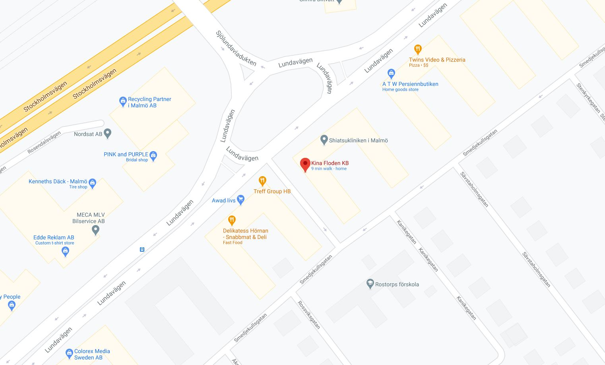

Kära gäster,
Nu har vi öppet på måndagar också (11-20).
För gäster som hellre vill hämta sin mat utanför restaurangen går detta bra.
Meddela detta när du beställer på telefon
(det finns också möjlighet att välja Hämta utanför vid online-beställning nu)
så kan du betala med Swish innan du är framme.
Meddela när du är framme så kommer vi ut med maten.
Dagens rätter på lunchen. Ingen buffé.
Lundavägen 65, Malmö
telefon: 040-93 15 62